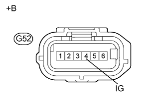

DTC C1381 Сбой напряжения источника питания датчика замедления |
| Код DTC | Условие обнаружения DTC | Неисправный участок |
| C1381 | При скорости автомобиля 3 км/час (2 мили в час) или более сигнал неправильного питания датчика замедления принимался в течение не менее 10 с. |
|
| 1.ПРОВЕРЬТЕ НАПРЯЖЕНИЕ НА КОНТАКТЕ (IG) |
Отсоедините разъем G52 датчика замедления.
|  |
Измерьте напряжение в соответствии со значениями, приведенными в таблице.
| Контакты для подключения диагностического прибора | Положение переключателя | Заданные условия |
| G52-4 (IG) - масса | Зажигание включено | 11 - 14 В |
| *a | Вид спереди разъема со стороны жгута проводов: (к датчику замедления) |
|
| ||||
| OK | |
| 2.ПРОВЕРЬТЕ ЖГУТ ПРОВОДОВ И РАЗЪЕМ (ВЫВОД GND) |
Отсоедините разъем G52 датчика замедления.
Измерьте сопротивление в соответствии со значениями, приведенными в таблице ниже.
| Контакты для подключения диагностического прибора | Режим | Заданные условия |
| G52-1 (GND) - масса | Всегда | Менее 1 Ом |
|
| ||||
| OK | |
| 3.СНОВА ПРОВЕРЬТЕ DTC |
Подсоедините разъем датчика замедления.
Удалите коды DTC (Нажмите здесь).
Запустите двигатель.
Проведите дорожные испытания.
Проверьте, выводится ли тот же DTC (Нажмите здесь).
| Результат | Следующий шаг |
| DTC C1381 не выводится | А |
| Выводится DTC C1381 | B |
|
| ||||
| А | ||
| ||